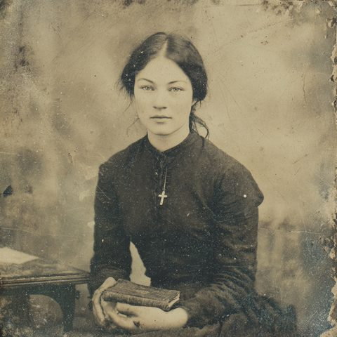

The Party 同行者
A scientist, a scholar, a soldier, a nurse — assembled under the seal of the university
Fellow
Travelers
Prof. Wang Enlai needed a lead researcher, a linguist, a security director, and a medical officer, and these four are who answered. What binds them is one marriage, one growing friendship between men who have both crossed cultures, one slow recognition between two carriers of grief, and the shared inheritance of people whom empire has already wounded. Each portrait opens onto a full expedition dossier — sheet, languages, lineage, and field journal.
The Investigators 四位調查員

Ch'ien Po-hsiang 錢伯驤
Chih-yüan · Paul Michel — Paleobotanist, Geological Survey of China · 33
Suzhou-born, of the thousand-year Qian scholar lineage; Sorbonne-trained, an interpreter for the Chinese Labour Corps who lived through Versailles and the May Fourth ferment. He is a moderate patriot in the Hu Shih / V. K. Ting mold — problems, not -isms — who knew the future Communist leadership in Paris without joining them. His love expresses itself as careful attention rather than possession, and his restraint is a discipline, not obliviousness.
His POW 90 and SAN 90 are the highest in the party: mechanically its spiritual anchor, and to entities that can perceive it, a figure of unexpected mass. If he breaks, he breaks from a greater height. In a locked drawer he keeps a notebook of angry political poems from 1919 that he has shown to no one — not even his wife.
Reads the room as
The observer who notices what others miss and files it quietly — and, quietly, the campaign's keeper of secrets.
Open full dossier ⟶
Hélène Éloïse Bergeron 愛蓮
Madame Ch'ien — Sociolinguist, Sino-French University · 33
Beaune-born, Sorbonne-doctored under Granet, Meillet and Pelliot; a sociolinguist of religious and revolutionary language before the discipline had a name. Her brother died at Verdun; her marriage to Chih-yüan across the colonial line was a family crisis her parents boycotted. A Dreyfusard-descended anti-colonial radical who knew Zhou Enlai and Xiang Jingyu in Paris — direct, chain-smoking, fearless.
Her Arcane Insight is the dangerous talent: she is the one who will learn Mythos spells if given the chance, the scholar who understands the liturgy where others merely bounce off it. Her arc bends toward tragedy — and her Luck 45 means the cushion runs out first.
Reads the room as
The intellect that engages what should be left alone — and the architect of the party's interior story.
Open full dossier ⟶
Subedar Gurdit Singh Bajwa
Singh-ji — Director of Expedition Security, Peking University · 33
Amritdhari Sikh of the Majha, fourteen years in the Indian Army — France, Mesopotamia, the Third Afghan War and Waziristan. His wife Harbans Kaur and both children died in the 1918 influenza while he was at the front; the news reached him weeks late. Then came Jallianwala Bagh, in his own district — the wound that does not heal. He left the army rather than remain an imperial enforcer, and now guards scholars instead of serving empire.
The party's combat backbone and field-operations lead, and its quiet watcher. His Sikh cosmology is humbler than Western rationalism, so his faith bends rather than breaks before the Mythos — his Sanity erodes not from a strange universe but from failing to protect the people in his charge. The Peshawar chapter is his alone.
Reads the room as
A grave, decorated man who does not volunteer his griefs — and whose laugh, when it comes, is unguarded.
Open full dossier ⟶
Marie Halvor Boucher 包素恬
Pao Su-t'ien — Missionary-Nurse & Medical Officer · 26
Vancouver-born, Norwegian-Métis of the Red River Boucher line; the youngest of the party by seven years. Two brothers died at Passchendaele, which drove her into nursing. Her father took her Métis mother's surname and left his church to marry her; her great-uncle was taken by a residential school and never came home. So she serves the very church that stole a child from her family, carrying a private vow: I will not be what they were.
The party's healer — literal and spiritual — and its precision marksman (Beady Eye: she fires into melee, at ropes and lamps and hands). Her genuine Clairvoyance she experiences as divine revelation, continuous with both her Presbyterian faith and her grandmother's second sight. She does not doubt it — which is exactly the door the Tokabhaya will try.
Reads the room as
Quiet until she isn't; warmth that helps before it speaks. Twenty-six, and has buried more than most twice her age.
Open full dossier ⟶